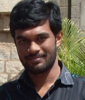

Kizheppatt Vipin

I am an assistant professor with the School of Engineering at Nazarbayev University, Astana, Kazakhstan. From 2014 to 2017 I was working as an assistant professor at Mahindra Ecole Centrale, Hyderabad. I completed my PhD in 2014 from the School of Computer Engineering at Nanyang Technological University, Singapore. My research was supervised by Assoc. Professor Suhaib A Fahmy , presently working at the University of Warwick. I completed my undergraduation from Rajiv Gandhi Institute of Technology, under Mahatma Gandhi University, Kottayam, India in 2007 with Distinction in Electronics and Communication Engineering. Before joining for PhD, from 2007 to 2010, I worked as an FPGA design and development engineer at Processor Systems India Pvt. Ltd in Bangalore.